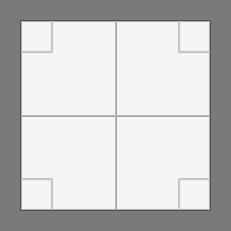
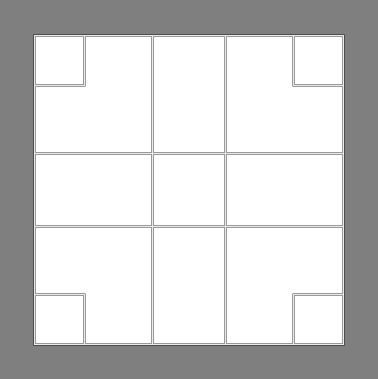

Hvis du ikke har GIMP'en installeret skal du hente den her: https://www.gimp.org/downloads/. Følg installationsvejledningen.
Første gang man starter GIMP op, åbner det i 3 seperate vinduer. Ændr dette til et vindue ved at vælge Vinduer→Tilstand med ét vindue.
Gimpens brugerflade består af 4 områder:
Når man skal gemme billede med GIMP, er er to grundlæggende metoder. At gemme i GIMP's interne format xcf (eXperimental Computing Facility), eller at eksportere billedet til et standardformat som f.eks. jpeg eller png. jpg og png anvendes til almindelige billeder. Generelt bør du altid anvende jpg medmindre:
Du skal kun anvende dette format, hvis du vil gemme mere avancerede indstillinger der kun gælder for GIMP'en. Det kan f.eks. være hvis du har anvendt lag.
Du gemmer i xcf format ved at vælge menuen fil→gem eller genvejstasterne Ctrl+s.
Hvis ens output er alt andet end xcf, så skal man eksportere sine billeder. Det gøres ved at vælge menuen fil→Eksportér eller genvejstasterne Ctrl+e.
For at gemme som jpg navgiver man filen med .jpg til sidst. Når man klikker , kommer følgende vindue frem.
Det eneste man skal overveje er kvaliteten af jpg filen. På nedestående billede kan du se forskellen mellem niveauerne af komprimering. Det er tydeligt at se forskel mellem 100% og 10%, men svært at se mellem 100% og 80%. De 90% som Gimp'en selv foreslår er en udemærket som slutprodukt.
Når du gemmer som png skal du ikke ændre på noget. png anvender ikke-destruktiv komprimering og komprimeringsgraden har kun noget at gøre med størrelsen af filen.
| Gemme metode | Menu | Genvej | Genvej Mac |
|---|---|---|---|
| Gem | fil → Gem | Ctrl+s | cmd+s |
| Gem som | fil → Gem som | Ctrl+Shift+s | cmd+Shift+s |
| Eksporter | fil → Eksporter | Ctrl+e | cmd+e |
| Gem som | fil → Eksporter som | Ctrl+Shift+e | cmd+Shift+e |
Her vil du blive introduceret til 8 centrale værktøjer til efterbehandling af billeder. Der vil ikke blive gået i dybden med det enkelte værktøj, men sådan at det kan bruges simpelt og effektivt. Ved mange af værktøjerne kan man vælge graden eller omfanget af effekten ved hjælp af en skyder. Man kan justere skyderen på 3 måder:
Man kan trække med musen på to måder. Holder man musen i den øverste halvdel af skyderen (En lodret pil) justerer man værdien efter musens position på skalaen. Hvis man holder musen i den nederste halvdel kan man finjustere værdien.
Ved flere af de nedestående værktøjer er der en dobbeltfunktion f.eks. ved sløring/skarphed. Funktionen anvender som udgangspunkt den først nævnte, og hvis man vil anvende den modsatte funktion skal man holde Ctrl nede mens man anvender musen
Markeringsværktøjet bruges til at områder på billedet der har samme farvenuance. Det kan f.eks. være en blå himmel, som man gerne vil ændre noget ved.
u
Ved at justere på Tærskel-værdien ændrer man hvor mange farvenuancer der skal markeres. Jo mere præcis man vil gøre det - jo lavere skal den være. Hvis man ønsker at tilføje nogle flere områder til sin udvælgelse holder man Shift nede samtidig med at man klikker. Så bliver de nye områder tilføjet.
Hvis man vil fjerne baggrunden fra et billede skal man først sikre sig at billedet har en alfa-kanal. Dette er et usynligt lag, som kun kan gemmes i png formatet. Tjek om billedet har en alfakanal ved at højreklikke på billedet og vælg lag→Gennemsigtighed.
Billedet har en alfakanal hvis du kan fjerne den - ellers ikke.
Beskæringsværktøjet bruges til at tilrette et billede så de rigtige ting kommer i fokus. Når man anvender værktøjet får bliver det fravalgte område udtonet, så man kan se det færdige resulatet. Når man er tilfreds med resultatet klikker men på feltet eller trykker Enter.
I denne fane er der to indstillinger der er interessante: Beskæring med fast forhold og hjælpelinier
Fast beskæringsforhold
Nogle gange har man brug for at en billede skal have en vis bredde eller højde - eller at der skal være et konkret forhold mellem bredde og højde. Ved fast bredde og højde angives værdien i pixels. Når man angiver et forhold skal det gøres ved hjælp af : (kolon). Skal siderne være lige lange skriver man f.eks. \( 1:1 \). hvis det skal være til en computerskærm kan det være \( 1920:1080 \). Herefter vil den boks man trækker være i det forhold.
VIGTIGT: Generelt er det en god ide, at give billedet flere pixels end angivet. Computeren vil selv tilpasse billedet korrekt, blot det har de rette forhold.
Hjælpelinier
For at hjælpe en med at lave en god beskæring kan man anvende hjælpelinier. De to mest anvendelige er centerlinier og Gyldne snit.
| Centerlinier | Gyldne snit |
|---|---|
|  |  |
Med mindre noget skal stå centreret bør linierne i et billede følge det gyldne snits linier , da det er naturligt for os at "læse" billeder på den måde.
Roteringsværktøjet bruges f.eks. til at finjustere hældningen på et billede. Det kan f.eks. være hvis horisonten på et landskabsbillede er lidt skæv. Ved at holde Ctrl nede rotere billedet med 15° af gangen.
Når man har roteret et billede kan man være ude for at billedet går udenfor laget. Dette retter man ved at Højreklikke og vælge Billede→Tilpas lærred til lag.
Shift+r
Ingen relevante indstillinger til dette.
Kloningsværktøjet anvendes hvis man vil erstatte noget på et billede med noget fra et andet sted. Det kan f.eks. være en en ledning man vil fjerne fra et gulvtæppe, eller en lampe man vil kopiere. Man vælger det man vil kopiere ved at sætte musen over det og venstreklikke mens man holder Ctrl nede. Herefter kan man "tegne" med det forvalgte område ved hjælp af musen.
c
I denne fane er der tre indstillinger der er interessante: Pensel, størrelse og opacitet
Pensel
Når man arbejder med tegnefunktioner i GIMP'en anvender man pensler. penslerne beskriver hvordan man tegner med den effekt man har valgt. Her vil jeg gennemgå de 4 pensler jeg anvender mest - de cirkulære.
Forskellen mellem dem er måden kanten på penslen fungerer. Ved den første vil kun det midsterste blive tegnet skarpt og det vil blive udtonet jo længere væk fra centrum man kommer.Ved den sidste (helt sorte cirkel) tegnes der skarpt i hele feltet.
Størrelse
I dette felt angives størrelsen på feltet.
Opacitet (gennemsigtughed)
Opaciteten styrer hvor meget af det oprindelige felt der tegnes. 100% betyder 100% aftegning og 0% ingenting. Dette kan anvendes hvis man gerne vil have teksturen fra det oprindelige til at blive gentaget, men at man samtidig vil beholde den lokale tekstur. Ved at sætte opaciteten lav (f.eks. 60%) vil man kunne lave en god blanding af områderne
h (heal)
Reperationsværktøjet minder på mange måder om kloningsværktøjet. Forskellen mellem dem er, at reperationsværktøjet forsøger at lave en kombination af det udvalgte område (vælges med museklik og Ctrl) og målområdet ved hjælp af matematiske beregninger. På denne måde får man en kombination af de to områder. Reparationsværktøjet kræver en del mere computerkræfter end kloningsværktøjet, men kan lave rigtig gode sammenblandinger. Dette er en fordel hvis man f.eks. ønsker at reparere områder med ustruktureret tekstur f.eks. hud, jord, blade osv.
Reparationsværktøjet anvender de samme indstillinger som kloning.
Shift+e (erase)
Viskelæderet anvendes til at fjerne ting fra billedet.
Viskelæderet anvender de samme indstillinger som kloning.
Slørings- og skarphedsværktøjet (Blur/sharpen) anvendes til at enten at sløre eller gøre detaljer skarpere. Værktøjet anvendes f.eks. til at udglatte hud (sløring), eller at gøre detaljer skarpere (skarphed). Når man bare bruger funktionen laver den sløring, men hvis man gerne vil gøre ting skarpere holder man Ctrl nede samtidig.
Shift+u
Sløring/skarphed anvender samme indstillinger som kloning og reparation, men har udover også en indstilling for hastighed (rate) som beskriver hvor stærk effekten skal være.
Lysne- og brændeeffekten anvendes til enten at lysne eller mørkne (Ctrl) områder man tegner på. Det kan f.eks. anvendes til at gøre skyggeområder lysere eller mørkere.
Shift+d
Lysne- og brændeværktøjet anvender samme indstillinger som ovenfor, men har herudover også en indstilling for virkningsgrad som beskriver hvor stærk effekten skal være.
Dette er en funktion som i nogle tilfælde kan gøre underværker ved billeder. Funktionen kan være svær at forstå, men det man gør er at flytte på hvad computeren skal tolke som sort og hvid. Det betyder at billeder kan få en bedre kontrast. Lad os prøve at kigge på et eksempel:
Højreklik→Farver→Niveauer
Desværre ingen :|
Herunder er menuen for niveauer åbnet på et billede, og det man ser er en graf (kaldet et histogram), der beskriver hvilke farveniveauer fra sort (tv) til hvid (th) der er i billedet. I dette billede kan vi se at der næsten ikke er nogle sorte farver, men masser af farver i mellemområdet.
Det betyder at de mørke farver der er i billedet vil blive vist som grålige farver. Ved at flytte skyderen under de mørke farver. På den måde vil de grå farver blive helt mørke. Billedet vil få mere kontrast og virke mere "klar".
Som du kan se er der 3 skydere.
| Skyder | Resultat |
|---|---|
| 1 | Ændrer fra hvilket niveau farven skal tolkes som sort |
| 2 | Ændrer hvilket niveau der skal tolkes som det midterste. Billedet bliver lysere ved at trække mod venstre, og mørkere ved at trække mod højre |
| 3 | Ændrer fra hvilket niveau farven skal tolkes som hvid. |
Udover muligheden for at at definere hvordan farverne skal tolkes kan man også vælge hvilke farver der skal være synlige. Det gøred ved at anvende skyderen Outputmenuer.
| Skyder | Resultat |
|---|---|
| 4 | Fortæller fra hvilket mørkt niveau farverne skal vises |
| 5 | Fortæller fra hvilket lyst niveau farverne skal fjernes |